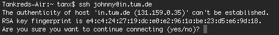

We’ve written about usability for PGP email encryption before. In a recent post we’ve touched on the usability of crypto apps in general and published a specification for multi-device sync of a user’s private key.
This post will address one of the hardest problems in PGP, namely key discovery of a contact’s public key.
UX vs. Security Tradeoff
Much has been written about the usability of PGP. Recently Matthew Green wrote a great post titled What's the matter with PGP?. The post talks a lot about technical aspects of the protocol, but also about what should be addressed in terms of usability for key management:
A proper approach to key management. This could be anything from centralized key management as in Apple's iMessage -- which would still be better than nothing -- to a decentralized (but still usable) approach like the one offered by Signal or OTR. Whatever the solution, in order to achieve mass deployment, keys need to be made much more manageable or else submerged from the user altogether.
I agree completely. It’s not the user’s fault that the protocol is so complicated and they shouldn’t be burdened with it. That’s why we’ve added automatic public key lookup for incoming and outgoing messages in our PGP mail client Whiteout Mail.
Here’s a look at how it works.
How Whiteout Mail Public Key Discovery Works
Up until now, Whiteout Mail had it’s own closed key server under keys.whiteout.io. We basically did what Matthew Green proposed. We created a centralized authority that would accept an uploaded public key only after validating a user’s email address (proving ownership of the key). Keys were fetched automatically while reading and writing in Whiteout Mail and messages were encrypted by default. This worked quite well, but only from Whiteout user to Whiteout user. If users wanted to write PGP messages to non-whiteout users, they would have to find the recipient’s public PGP key and manually import it as a file. This is not only tedious but also impossible on platforms like iOS, where apps don’t have access to the filesystem.
So users asked for support of standard HKP key servers and there was a discussion on how to best handle key import.
Automatic HKP Lookup in Whiteout Mail
We felt strongly that encryption should just work for average users and that most should never be exposed to key management in the first place. Here’s what we came up with:
When a user composes a new message to a recipient’s email address, the client first queries the local keychain. This keychain includes cached keys imported from any source.
If the recipient’s key is not found in the local key ring the client then queries our own key server. These keys have been validated by our key server to ensure recipient key ownership.
If there is no key for the recipient on our key server, a list of well known HKP key servers (e.g. pgp.mit.edu) is queried. If a key is found, it is imported to the local key ring by a TOFU (trust on first use) principle.
If a key is found, it will be used to encrypt the message. The user will also be notified in the UI by changing the color from red (insecure) to blue (secure).
"But what if an attacker uploads a fake public key to pgp.mit.edu and users don’t notice?"
For most users this is not an issue as the attacker would need access to the recipient’s mailbox to decrypt the message (which has been encrypted to the wrong key). It depends on the type of attacker of course. State level adversaries can intercept a message in transit. But this implies an active/targeted attack. If this is your threat model, you will want to verify the PGP key fingerprint over a second channel anyway. Most users on the other hand would be helped by protecting them against a passive adversary like dragnet surveillance.
So why design our encryption solution for an edge case and ignore the common case which would lead to a more usable experience for the masses?
Even with TOFU key lookup, users can later always navigate to the contacts menu and verify a recipient’s key fingerprint if they need to. There is a trade off between security and usability here. But users get transparency when they need it and it's as painless as possible in most cases.
In practice encrypting to the wrong key will most likely cause the recipient to reply with something like this:
"Hey, can't read your message. Did you use my current key? Here you go... "
This is the only case the user will need to be exposed to key management. For this case Whiteout Mail offers key import via copy/paste, file import, or manual HKP server lookup. Once the correct key is imported, all future conversations between those users will be encrypted correctly.
TOFU (Trust On First Use) Works
Sysadmins use TOFU everyday when they login to a new host via ssh. This is what the workflow for most users feels like:

- Type ssh username@hostname
- Read a security warning with some random characters
- Type yes ... because "who checks that stuff anyway"
Do you always confirm the RSA fingerprint when ssh'ing into a new machine? If we are brutally honest with ourselves, this is how encryption systems are being used out there in the wild. But it's still more secure than using a plaintext connection over telnet.
How We Implemented HKP Support for Whiteout Mail
Before integrating HKP support, we looked at current key server implementations and saw that it wasn’t possible to integrate them into our app, due to some missing features.
Missing features in HKP today
- No SSL support
- Bad availability/scalability
- No email address validation of uploaded keys
- No CORS support (see here)
We couldn’t make cross origin requests to HKP servers from the web version of our app. So instead we decided to use our current key server as a proxy and query multiple HKP servers for maximum availability and performance. Here’s a quick summary of our current key server architecture:
Whiteout Public Key Server:
- Modern REST style api
- SSL only
- CORS support
- Email address validation of uploaded key
- Automatic lookup on multiple HKP servers (first request wins)
- Automatic upload of public keys to HKP servers (after validation on our server)
- Autoscaling application server
- MongoDB cluster
REST API:
Host: https://keys.whiteout.io
Fetch key (GET)
- By email (short hand) /:emailAddress
- By email (long) /publickey/user/:emailAddress
- By key ID /publickey/key/:keyId
Upload key (PUT)
- Upload new key /publickey/user/:emailAddress/key/:keyId
Summary
Using this api any PGP user (even non-Whiteout users) can link their pgp key with https://keys.whiteout.io/emailAddress. And any pgp user will be able to send and receive encrypted messages with Whiteout users, since HKP support goes both ways.
The main advantage to the approach is that encryption will just work. Technically savvy GPG users will be able to send and receive messages with average users like Johnny. Can't get your Johnny to use GPG? Just send him over to mail.whiteout.io and leave your GPG setup untouched.
We look forward to your feedback and ideas. Please don't hesitate to ring us up on twitter or via mail.
Happy encrypting!